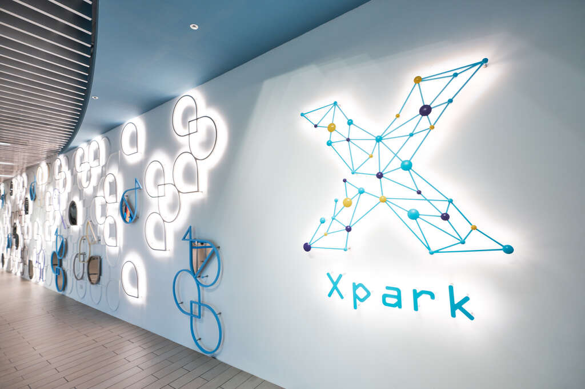

Xpark 八景島水族館
海，是所有生命的起源，DNA是所有生命的基礎。以這兩個概念作為LOGO創作的靈感，將Xpark的價值—「創造不同以往，未知的感動體驗」，透過象徵原子及DNA的點與線，演示出獨特的品牌視覺。然而，生命的演化持續進行，時代的變化日新月異。 Xpark將對未知的敬意、未來的期盼，融合在設計當中。因此在LOGO左側，您可發現有一部分未連結的線段，代表Xpark，將適應時代與環境的變化，如同世界上的所有生命一般，持續地成長、進化。讓獨特的感動體驗、求知的喜悅，無論跟誰、無論體驗過多少次，來到Xpark，都像第一次到訪讓人心動。 『Xpark，以能滿足所有旅客的期待、提供獨一無二的感動為設立宗旨，懷著謙虛的心，向未知致意，與進化同行。』
